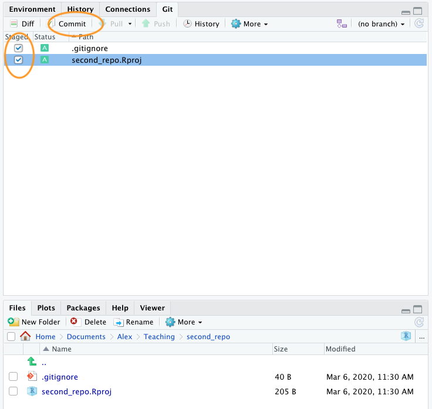
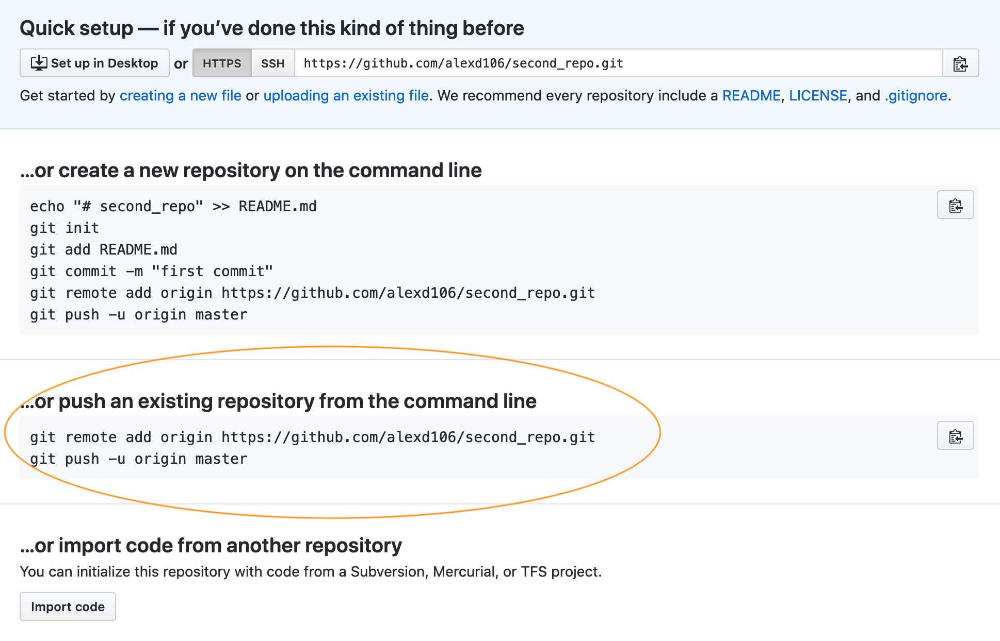
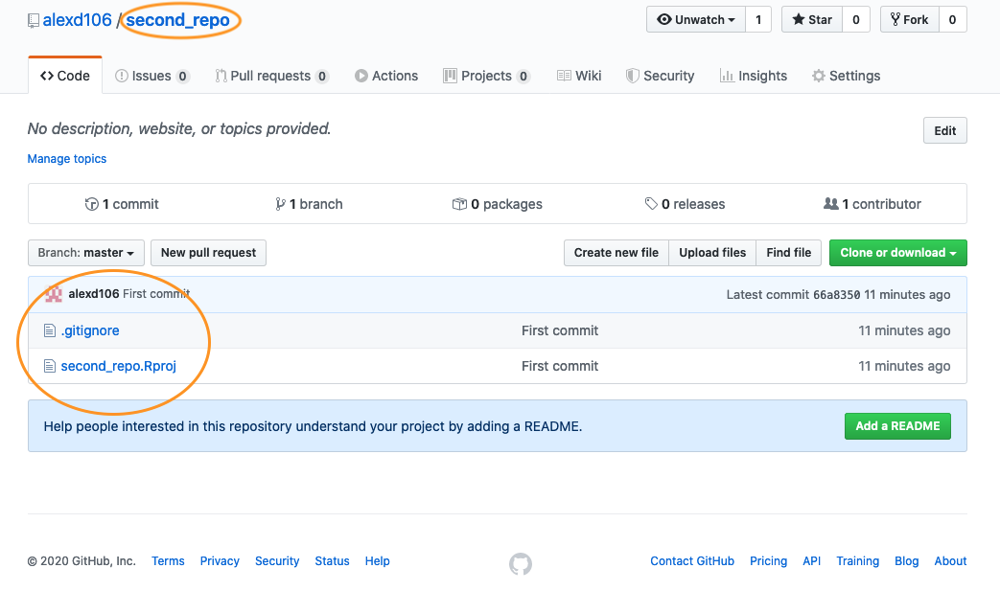
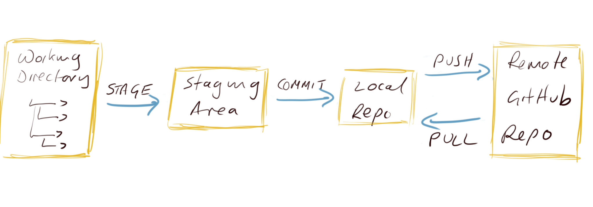
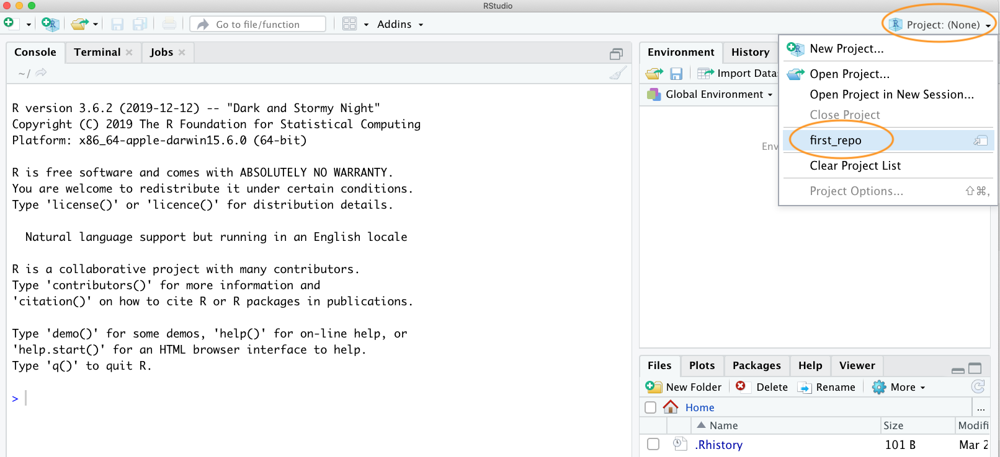
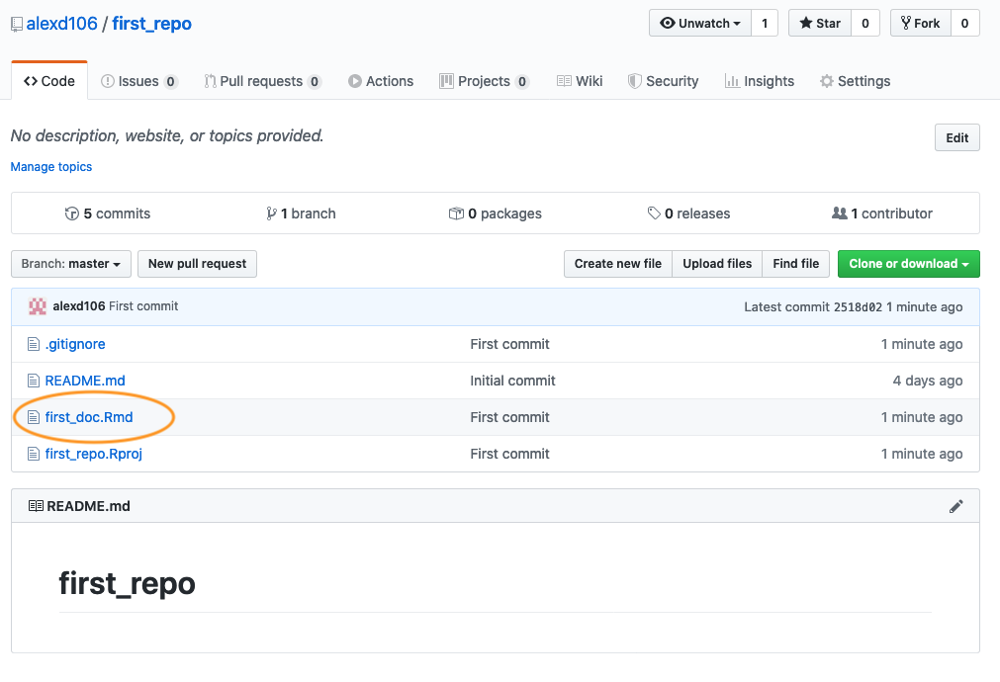
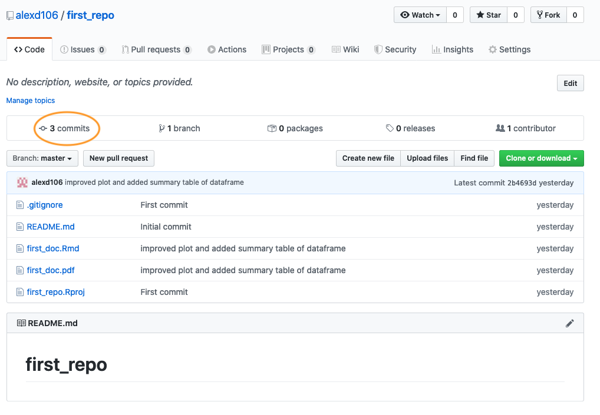
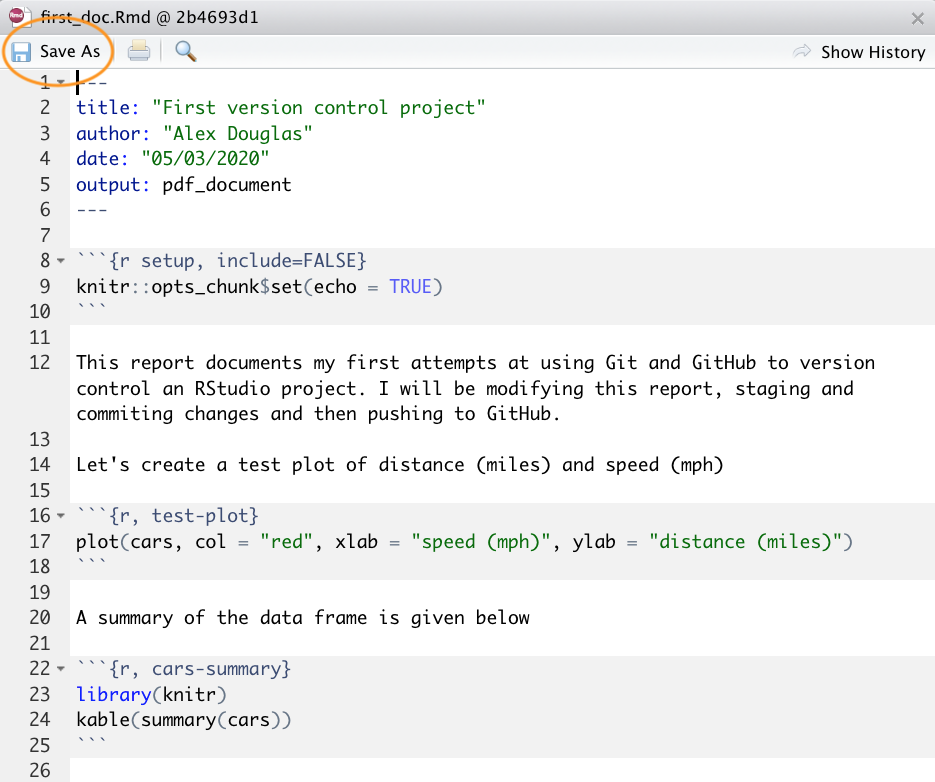
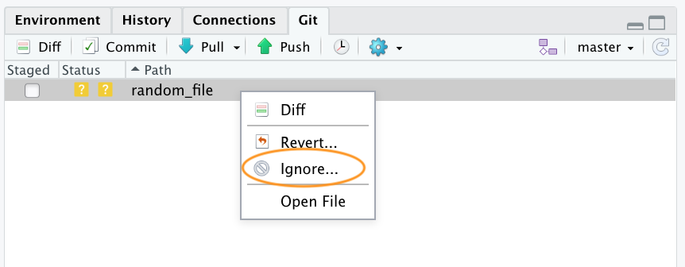

7 Contrôle de version avec Git et GitHub
Ce chapitre vous présente les bases de l’utilisation d’un système de contrôle de version pour garder une trace de tout votre code R important et faciliter la collaboration avec vos collègues et le reste du monde. Ce chapitre se concentre sur l’utilisation du logiciel “Git” en combinaison avec le service d’hébergement en ligne “GitHub”. À la fin du chapitre, vous serez en mesure d’installer et de configurer Git et GitHub sur votre ordinateur et de mettre en place et de travailler avec un projet de contrôle de version dans RStudio. Nous n’aborderons pas en détail les sujets plus avancés tels que le branching, le forking et les pull requests, mais nous en donnerons un aperçu plus tard dans sec-collab.
Juste quelques notes d’avertissement. Dans ce chapitre, nous utiliserons RStudio pour interfacer avec Git car il offre une interface graphique conviviale qui rend la vie un peu plus facile (et qui ne veut pas ça ?). Cependant, l’un des inconvénients de l’utilisation de RStudio avec Git est que RStudio ne fournit que des fonctionnalités Git assez basiques à travers son système de menus. C’est très bien pour la plupart des choses que nous ferons dans ce chapitre (bien que nous introduirons quelques commandes Git au fur et à mesure), mais si vous voulez vraiment bénéficier de la puissance de Git, vous devrez apprendre quelques commandes Git (voir sec-resources) et la syntaxe, et changer pour un autre IDE tel que VSCode qui est bien meilleur en ce qui concerne l’intégration avec Gitub. Git peut devenir un peu déroutant et frustrant quand on commence à l’utiliser. Cela est principalement dû à la terminologie et à l’utilisation abondante du jargon associé à Git, mais il est impossible de cacher le fait qu’il est assez facile de se mettre dans le pétrin avec son dépôt Git. C’est pourquoi nous avons essayé de faire en sorte que les choses soient aussi simples que possible dans ce chapitre et, par conséquent, nous vous montrerons de temps en temps quelques façons de faire très “non Git” (principalement en ce qui concerne le retour à des versions précédentes de documents). N’y voyez pas d’inconvénient, il n’y a pas de honte à utiliser ces solutions peu techniques et si elles fonctionnent, c’est qu’elles fonctionnent. Enfin, GitHub n’a pas été conçu pour héberger de très gros fichiers et vous avertira si vous essayez d’ajouter des fichiers de plus de 50 Mo et vous empêchera d’ajouter des fichiers de plus de 100 Mo. Si votre projet implique l’utilisation de fichiers de grande taille, il existe quelques quelques solutions mais nous trouvons que la solution la plus simple est d’héberger ces fichiers ailleurs (Googledrive, Dropbox etc) et de créer un lien vers eux dans un fichier README ou un document R markdown sur Github.
7.1 Qu’est-ce que le contrôle de version ?
A Système de contrôle des versions (VCS) conserve un enregistrement de toutes les modifications que vous apportez aux fichiers qui composent un projet particulier et vous permet de revenir à des versions antérieures des fichiers si nécessaire. En d’autres termes, si vous vous trompez ou si vous perdez accidentellement des fichiers importants, vous pouvez facilement revenir à une étape antérieure de votre projet pour régler le problème. Le contrôle de version a été conçu à l’origine pour le développement collaboratif de logiciels, mais il est tout aussi utile pour la recherche scientifique et les collaborations (même s’il est vrai que la plupart des termes, du jargon et des fonctionnalités sont axés sur le développement de logiciels). Il existe actuellement de nombreux systèmes de contrôle de version différents, mais nous nous concentrerons sur l’utilisation de Git parce qu’il est gratuit et open source et qu’il s’intègre bien à RStudio. Cela signifie qu’il peut facilement faire partie de votre flux de travail habituel avec un minimum de frais supplémentaires.
7.2 Pourquoi utiliser le contrôle de version ?
Pourquoi devriez-vous vous préoccuper du contrôle des versions ? Tout d’abord, il permet d’éviter cette situation (familière ?) lorsque vous travaillez sur un projet qui découle généralement de ce scénario (familier ?).
Le contrôle de version se charge automatiquement de conserver une trace de toutes les versions d’un fichier particulier et vous permet de revenir aux versions précédentes si nécessaire. Le contrôle de version vous aide également (en particulier le futur vous) à garder une trace de tous vos fichiers en un seul endroit et il aide les autres (en particulier les collaborateurs) à revoir, contribuer et réutiliser votre travail via le site web GitHub. Enfin, vos fichiers sont toujours disponibles de n’importe où et sur n’importe quel ordinateur, tout ce dont vous avez besoin, c’est d’une connexion internet.
7.3 Qu’est-ce que Git et GitHub ?
Git est un système de contrôle de version développé à l’origine par Linus Torvalds qui permet de suivre les modifications apportées à un ensemble de fichiers. Ces fichiers peuvent être de n’importe quel type, y compris la ménagerie de fichiers qui composent généralement un projet axé sur les données (.pdf, .Rmd, .docx, .txt, .jpg, etc.), bien que les fichiers texte simples soient ceux qui fonctionnent le mieux. L’ensemble des fichiers qui composent un projet s’appelle un référentiel (ou simplement repo).
GitHub est un service d’hébergement de dépôts Git basé sur le web qui vous permet de créer une copie distante de votre projet local contrôlé par version. Cette copie peut servir de sauvegarde ou d’archive de votre projet ou vous permettre, ainsi qu’à vos collègues, d’y accéder pour travailler en collaboration.
Au début d’un projet, nous créons généralement (mais pas toujours) un dépôt Git. distant sur GitHub, puis cloner (il s’agit d’une copie) de ce dépôt dans notre base de données local local (celui qui se trouve devant vous). Ce clonage est généralement un événement unique et vous ne devriez pas avoir besoin de cloner ce dépôt à nouveau, à moins que vous ne fassiez vraiment n’importe quoi. Une fois que vous avez cloné votre dépôt, vous pouvez travailler localement sur votre projet comme d’habitude, en créant et en sauvegardant des fichiers pour votre analyse de données (scripts, documents R markdown, figures, etc.). En cours de route, vous pouvez prendre des instantanés (appelés commits) de ces fichiers après y avoir apporté des modifications importantes. Nous pouvons alors pousser ces modifications vers le dépôt GitHub distant pour en faire une sauvegarde ou les mettre à la disposition de nos collaborateurs. Si d’autres personnes travaillent sur le même projet (dépôt), ou si vous travaillez sur un autre ordinateur, vous pouvez tirer les modifications vers votre dépôt local afin que tout soit synchronisé.

7.4 Pour commencer
Ce chapitre suppose que vous avez déjà installé les dernières versions de R et un IDE (RStudio ou VSCode). Si vous ne l’avez pas encore fait, vous trouverez des instructions dans sec-install-r.
7.4.1 Installer Git
Pour commencer, vous devez d’abord installer Git. Si vous avez de la chance, vous avez peut-être déjà installé Git (surtout si vous avez un ordinateur Mac ou Linux). Vous pouvez vérifier si vous avez déjà installé Git en cliquant sur le bouton Terminal tab dans RStudio et en tapant git --version. Si vous voyez quelque chose qui ressemble à git version 2.25.0 (le numéro de version peut être différent sur votre ordinateur), alors vous avez déjà installé Git (jours heureux). Si vous obtenez une erreur (quelque chose comme git: command not found), cela signifie que Git n’est pas (encore) installé.
Vous pouvez également faire cette vérification en dehors de RStudio en ouvrant un terminal séparé si vous le souhaitez. Sous Windows, allez dans le menu “Démarrer” et dans la barre de recherche (ou la boîte d’exécution) tapez cmd et appuyez sur la touche Entrée. Sur Mac, allez dans “Applications” dans le Finder, cliquez sur le dossier “Utilitaires”, puis sur le programme “Terminal”. Sur une machine Linux, ouvrez simplement le Terminal (Ctrl+Alt+T fait souvent l’affaire).
Pour installer Git sur un Windows nous vous recommandons de télécharger et d’installer Git pour Windows (également connu sous le nom de “Git Bash”). Vous trouverez le fichier de téléchargement et les instructions d’installation ici .
Pour ceux qui utilisent un Mac nous vous recommandons de télécharger Git à partir de ici et de l’installer de la manière habituelle (double-cliquez sur le paquet d’installation une fois téléchargé). Si vous avez déjà installé Xcode sur votre Mac et que vous souhaitez utiliser une version plus récente de Git, vous devrez suivre quelques étapes supplémentaires documentées ici . Si vous n’avez jamais entendu parler de Xcode, ne vous inquiétez pas !
Pour ceux d’entre vous qui ont la chance de travailler sur un Linux vous pouvez simplement utiliser le gestionnaire de paquets de votre système d’exploitation pour installer Git à partir du dépôt officiel. Pour Ubuntu Linux (ou ses variantes), ouvrez votre Terminal et tapez
sudo apt update
sudo apt install gitVous aurez besoin de privilèges administratifs pour effectuer cette opération. Pour les autres versions de Linux, voir ici pour de plus amples instructions d’installation.
Quelle que soit la version de Git que vous installez, une fois l’installation terminée, vérifiez que le processus d’installation s’est bien déroulé en exécutant la commande git --version dans l’onglet Terminal de RStudio (comme décrit ci-dessus). Sur certaines installations de Git (oui, nous vous regardons MS Windows), cela peut encore produire une erreur car vous devrez également configurer RStudio pour qu’il puisse trouver l’exécutable Git (décrit dans sec-rs-config).
7.4.2 Configurer Git
Après avoir installé Git, vous devez le configurer pour pouvoir l’utiliser. Cliquez à nouveau sur l’onglet Terminal dans la fenêtre Console et tapez ce qui suit :
git config --global user.email 'you@youremail.com'
git config --global user.name 'Your Name'en remplaçant 'Your Name' votre nom réel et 'you@youremail.com' par votre adresse électronique. Nous vous recommandons d’utiliser l’adresse électronique de votre université (si vous en avez une), car vous l’utiliserez également lors de l’ouverture de votre compte GitHub (voir plus loin).
Si vous avez réussi, vous ne devriez pas voir de message d’erreur dans ces commandes. Pour vérifier que vous avez configuré Git avec succès, tapez ce qui suit dans le Terminal
git config --global --listVous devriez voir vos deux user.name et user.email configurés.
7.4.3 Configurer RStudio
Comme vous pouvez le voir ci-dessus, Git peut être utilisé à partir de la ligne de commande, mais il s’intègre également bien à RStudio, en fournissant une interface utilisateur graphique conviviale. Si vous souhaitez utiliser l’intégration Git de RStudio (nous vous le recommandons, au moins au début), vous devez vérifier que le chemin d’accès à l’exécutable Git est correctement spécifié. Dans RStudio, allez dans le menu Tools -> Global Options -> Git/SVN et assurez-vous que ‘Enable version control interface for RStudio projects’ est coché et que le chemin ‘Git executable:’ est correct pour votre installation. Si ce n’est pas le cas, cliquez sur le bouton Browse... et naviguez jusqu’à l’endroit où vous avez installé git et cliquez sur le fichier exécutable. Vous devrez redémarrer RStudio après cette opération.

7.4.4 Configurer VSCode
pour développer
7.4.5 Créer un compte GitHub
Si tout ce que vous voulez, c’est garder une trace des fichiers et de leurs versions sur votre ordinateur local, alors Git est suffisant. En revanche, si vous souhaitez faire une copie hors site de votre projet ou le mettre à la disposition de vos collaborateurs, vous aurez besoin d’un service d’hébergement en ligne pour vos dépôts Git. C’est là que GitHub entre en jeu (il existe également d’autres services tels que GitLab , Bitbucket et Savannah ). Vous pouvez vous inscrire pour un compte gratuit sur GitHub ici . Vous devrez spécifier un nom d’utilisateur, une adresse email et un mot de passe fort. Nous vous suggérons d’utiliser l’adresse électronique de votre université (si vous en avez une), car elle vous permettra également de demander un compte gratuit d’éducateur ou de chercheur . gratuit pour les éducateurs ou les chercheurs ce qui vous permettra de bénéficier d’un certain nombre d’avantages avantages (ne vous en préoccupez pas pour l’instant). Quand il s’agit de choisir un nom d’utilisateur, nous vous suggérons d’y réfléchir. Choisissez un nom d’utilisateur court plutôt que long, utilisez des minuscules et des traits d’union si vous voulez inclure plusieurs mots, trouvez un moyen d’incorporer votre nom réel et, enfin, choisissez un nom d’utilisateur que vous vous sentirez à l’aise de révéler à votre futur employeur !
Cliquez ensuite sur “Sélectionnez un plan” (il se peut que vous deviez d’abord résoudre une énigme simple pour vérifier que vous êtes un être humain) et choisissez l’option “Plan gratuit”. Github vous enverra un courriel à l’adresse que vous avez fournie pour que vous puissiez vérifier.
Une fois que vous avez terminé toutes ces étapes, vous devriez avoir installé Git et GitHub, prêts à l’emploi (enfin !).
7.5 Mise en place d’un projet
7.5.1 dans RStudio
Maintenant que tout est prêt, créons notre premier projet RStudio à version contrôlée. Pour ce faire, il existe plusieurs approches différentes. Vous pouvez d’abord créer un dépôt GitHub distant, puis connecter un projet RStudio à ce dépôt (c’est ce que nous appellerons l’option 1). Une autre option consiste à créer d’abord un dépôt local, puis à lier un dépôt GitHub distant à ce dépôt (Option 2). Vous pouvez également connecter un projet existant à un dépôt GitHub, mais nous n’aborderons pas cette option ici. Si vous êtes totalement novice en matière de Git et de GitHub, nous vous suggérons d’utiliser l’option 1, car cette approche met en place votre dépôt Git local de manière satisfaisante et vous pouvez pousser et tirer immédiatement. L’option 2 nécessite un peu plus de travail et offre donc plus de possibilités de se tromper. Nous aborderons ces deux options ci-dessous.
7.5.2 Option 1 - GitHub d’abord
Pour utiliser l’approche GitHub first, vous devez d’abord créer un fichier dépôt (repo) sur GitHub. Accédez à votre page GitHub et connectez-vous si nécessaire. Cliquez sur l’onglet “Dépôts” en haut et ensuite sur le bouton vert “Nouveau” à droite.

Donnez un nom à votre nouveau dépôt (appelons-le first_repo pour ce chapitre), sélectionnez ‘Public’, cochez la case ‘Initialize this repository with a README’ (c’est important) et cliquez sur ‘Create repository’ (ignorez les autres options pour l’instant).

Votre nouveau dépôt GitHub est maintenant créé. Notez que le README a été rendu dans GitHub et qu’il est au format markdown (.md) (voir sec-rmarkdown-r sur R markdown si cela ne vous dit rien). Cliquez ensuite sur le bouton vert “Cloner ou télécharger” et copiez le fichier https//... URL qui s’affiche pour plus tard (mettez tout en surbrillance et copiez ou cliquez sur l’icône de copie dans le presse-papiers à droite).
Ok, nous allons maintenant nous intéresser à RStudio. Dans RStudio, cliquez sur le bouton File -> New Project le menu Dans la fenêtre qui s’ouvre, sélectionnez Version Control.

Collez maintenant l’URL que vous avez précédemment copiée de GitHub dans le champ Repository URL: dans la boîte de dialogue. Cela devrait remplir automatiquement le champ Project Directory Name: avec le nom correct du dépôt (il est important que le nom de ce répertoire soit le même que celui du dépôt que vous avez créé sur GitHub). Vous pouvez ensuite sélectionner l’endroit où vous souhaitez créer ce répertoire en cliquant sur le bouton Browse en face du bouton Create project as a subdirectory of: en face de l’option Naviguez jusqu’à l’endroit où vous souhaitez créer le répertoire et cliquez sur OK. Nous cochons également l’option Open in new session option.

RStudio va maintenant créer un nouveau répertoire portant le même nom que votre référentiel sur votre ordinateur local et va ensuite cloner votre référentiel distant dans ce répertoire. Le répertoire contiendra trois nouveaux fichiers ; first_repo.Rproj (ou quel que soit le nom que vous avez donné à votre référentiel), README.md et .gitignore. Vous pouvez vérifier cela dans le Files qui se trouve généralement dans le volet inférieur droit de RStudio. Vous disposerez également d’un Git dans le volet supérieur droit avec deux fichiers listés (nous y reviendrons plus tard dans le chapitre). C’est tout pour l’option 1, vous avez maintenant un dépôt GitHub distant qui est lié à votre dépôt local géré par RStudio. Toutes les modifications que vous apportez aux fichiers de ce répertoire seront contrôlées par Git.

7.5.3 Option 2 - RStudio d’abord
Une autre approche consiste à créer d’abord un projet RStudio local, puis à établir un lien avec un dépôt Github distant. Comme nous l’avons mentionné précédemment, cette option est plus complexe que l’option 1. N’hésitez donc pas à sauter cette étape et à y revenir plus tard si vous êtes intéressé. Cette option est également utile si vous souhaitez simplement créer un projet RStudio local lié à un dépôt Git local (i.e. GitHub n’est pas impliqué). Dans ce cas, suivez les instructions ci-dessous en omettant la partie GitHub.
Dans RStudio, cliquez sur le bouton File -> New Project et sélectionnez l’option New Directory option.

Dans la fenêtre qui s’ouvre, sélectionnez l’option New Project l’option

Dans la fenêtre Nouveau projet, spécifiez un Directory name (choisissez second_repo pour ce chapitre) et sélectionnez l’endroit où vous souhaitez créer ce répertoire sur votre ordinateur (cliquez sur le bouton Browse (cliquez sur le bouton ). Assurez-vous que le répertoire Create a git repository est cochée

Cela créera un répertoire à version contrôlée appelé second_repo sur votre ordinateur qui contient deux fichiers, second_repo.Rproj et .gitignore (il peut également y avoir un fichier .Rhistory mais n’en tenez pas compte). Vous pouvez le vérifier en consultant le fichier Files dans RStudio (généralement dans le volet inférieur droit).

OK, avant de créer un dépôt sur GitHub, nous devons faire une dernière chose - nous devons placer notre fichier second_repo.Rproj et .gitignoresous contrôle de version. Malheureusement, nous n’avons pas encore abordé ce sujet en détail, alors suivez les quelques instructions suivantes (à l’aveugle !) et nous y reviendrons dans sec-use-git de ce chapitre.
Pour placer nos deux fichiers sous contrôle de version, cliquez sur l’onglet “Git” qui se trouve généralement dans le panneau supérieur de RStudio.

Vous pouvez voir que les deux fichiers sont listés. Ensuite, cochez les cases de la colonne “Staged” pour les deux fichiers et cliquez sur le bouton “Commit”.

Vous accédez alors à la fenêtre “Examiner les modifications”. Saisissez le message de validation “Première validation” dans la fenêtre “Message de validation” et cliquez sur le bouton “Valider”. Une nouvelle fenêtre apparaît avec des messages que vous pouvez ignorer pour l’instant. Cliquez sur “Fermer” pour fermer cette fenêtre ainsi que la fenêtre “Examiner les modifications”. Les deux fichiers devraient maintenant avoir disparu du panneau Git dans RStudio, ce qui indique que la validation a été effectuée avec succès.

OK, ces deux fichiers sont maintenant sous contrôle de version. Nous devons maintenant créer un nouveau dépôt sur GitHub. Dans votre navigateur, allez sur votre page GitHub et connectez-vous si nécessaire. Cliquez sur l’onglet “Dépôts” et cliquez sur le bouton vert “Nouveau” à droite. Donnez à votre nouveau dépôt le nom second_repo (identique au nom de votre répertoire de contrôle de version) et sélectionnez “Public”. Cette fois-ci ne pas cocher la case ‘Initialize this repository with a README’ (c’est important) et cliquer sur ‘Create repository’.

Cela vous amènera à une page de configuration rapide qui vous fournira du code pour différentes situations. Le code qui nous intéresse est celui qui se trouve sous ...or push an existing repository from the command line l’en-tête.

Surlignez et copiez la première ligne de code (note : la vôtre sera légèrement différente car elle inclura votre nom d’utilisateur GitHub et non le mien).
git remote add origin https://github.com/alexd106/second_repo.git
Passez à RStudio, cliquez sur l’onglet “Terminal” et collez la commande dans le terminal. Retournez ensuite sur GitHub et copiez la deuxième ligne de code
git push -u origin master
et collez-la dans le terminal de RStudio. Vous devriez voir quelque chose comme ceci

Si vous jetez un coup d’œil à votre repo sur GitHub (cliquez sur l’icône /second_repo en haut de la page), vous verrez le second_repo.Rproj et .gitignore ont été remplacés par les fichiers poussés sur GitHub depuis votre dépôt local.

La dernière chose à faire est de créer et d’ajouter un fichier README à votre dépôt. Un fichier README décrit votre projet et est écrit en utilisant le même langage Markdown que vous avez appris dans sec-rmarkdown-r. Un bon fichier README permet aux autres (ou au futur vous !) d’utiliser votre code et de reproduire votre projet. Vous pouvez créer un fichier README dans RStudio ou dans GitHub. Utilisons la seconde option.
Dans votre dépôt sur GitHub, cliquez sur le bouton vert Add a README vert.

Rédigez maintenant une brève description de votre projet dans la rubrique <> Edit new file puis cliquez sur le bouton vert Commit new file vert.

Vous devriez maintenant voir l’écran README.md dans votre référentiel. Il n’existera pas encore sur votre ordinateur car vous devrez tirer ces changements dans votre dépôt local, mais nous y reviendrons dans la section suivante.
Que vous ayez suivi l’option 1 ou l’option 2 (ou les deux), vous avez maintenant configuré avec succès un projet RStudio à version contrôlée (et un répertoire associé) et l’avez lié à un dépôt GitHub. Git va maintenant surveiller ce répertoire pour toutes les modifications que vous apportez aux fichiers et aussi si vous ajoutez ou supprimez des fichiers. Si les étapes ci-dessus vous semblent un peu difficiles, rappelez-vous que vous n’avez à le faire qu’une seule fois pour chaque projet et que cela devient de plus en plus facile avec le temps.
7.5.4 dans VSCode
pour développer
7.6 Utiliser Git avec RStudio
Maintenant que nous avons mis en place notre projet et nos dépôts (locaux et distants), il est enfin temps d’apprendre à utiliser Git dans votre IDE !
Typiquement, lorsque vous utilisez Git, votre flux de travail se déroule comme suit :
Vous créez/supprimez et modifiez les fichiers dans le répertoire de votre projet sur votre ordinateur comme d’habitude (en sauvegardant les modifications au fur et à mesure).
Une fois que vous avez atteint un “point d’arrêt” naturel dans votre progression (c.-à-d. vous seriez triste si vous perdiez ce progrès), vous étape ces fichiers
Ensuite, vous engager les modifications que vous avez apportées à ces fichiers mis en scène (avec un message de validation utile), ce qui crée un instantané permanent de ces modifications.
Vous continuez ce cycle jusqu’à ce que vous arriviez à un point où vous souhaitez pousser ces changements sur GitHub
Si vous travaillez avec d’autres personnes sur le même projet, vous pouvez également avoir besoin de tirer leurs modifications sur votre ordinateur local

Prenons un exemple pour clarifier ce flux de travail.
Ouvrez le first_repo.Rproj que vous avez créé précédemment dans l’option 1. Utilisez soit l’outil File -> Open Project ou cliquer sur l’icône de projet en haut à droite et sélectionner le projet approprié.

Créez un document R markdown à l’intérieur de ce projet en cliquant sur l’icône File -> New File -> R markdown menu (vous vous souvenez de sec-rmarkdown-r ?).
Une fois créé, nous pouvons supprimer tout le code R markdown de l’exemple (à l’exception de l’en-tête YAML) comme d’habitude et écrire du texte R markdown intéressant et inclure un tracé. Nous utiliserons la fonction cars pour ce faire. Enregistrez ce fichier (cmd + s pour Mac ou ctrl + s sous Windows). Votre document R markdown devrait ressembler à ce qui suit (ce n’est pas grave si ce n’est pas exactement la même chose).

Jetez un coup d’œil à l’onglet ‘Git’ qui devrait contenir votre nouveau document R markdown (first_doc.Rmd dans cet exemple) ainsi que first_repo.Rproj et .gitignore (vous avez créé ces fichiers précédemment en suivant l’option 1).

En suivant notre flux de travail, nous devons maintenant mettre en scène ces fichiers. Pour ce faire, cochez les cases de la colonne “Etagé” pour tous les fichiers. Notez qu’une icône d’état se trouve à côté de la case, ce qui vous donne une indication sur la façon dont les fichiers ont été modifiés. Dans notre cas, tous les fichiers doivent être ajoutés (A majuscule) car nous venons de les créer.
Après avoir mis en scène les fichiers, l’étape suivante consiste à engager les fichiers. Pour ce faire, cliquez sur le bouton “Commit”.

Après avoir cliqué sur le bouton “Valider”, vous accéderez à la fenêtre “Revoir les modifications”. Vous devriez voir les trois fichiers que vous avez mis en scène à l’étape précédente dans le panneau de gauche. Si vous cliquez sur le nom du fichier first_doc.Rmd vous verrez les modifications que vous avez apportées à ce fichier en surbrillance dans le volet inférieur. Le contenu que vous avez ajouté est surligné en vert et le contenu supprimé est surligné en rouge. Comme vous venez de créer ce fichier, tout le contenu est surligné en vert. Pour valider ces fichiers (prendre un instantané), saisissez d’abord un message de validation obligatoire dans le champ “Message de validation”. Ce message doit être relativement court et informatif (pour vous et vos collaborateurs) et indiquer pourquoi vous avez effectué les modifications, et non ce que vous avez modifié. Ceci est logique car Git garde une trace de ce que a changé et qu’il est donc préférable de ne pas utiliser les messages de livraison à cette fin. Il est traditionnel de saisir le message “First commit” (ou “Initial commit”) lorsque vous livrez des fichiers pour la première fois. Cliquez maintenant sur le bouton “Commit” pour valider ces modifications.

Un résumé de la validation que vous venez d’effectuer s’affiche. Cliquez ensuite sur le bouton “Fermer” pour revenir à la fenêtre “Revoir les modifications”. Notez que les fichiers mis à disposition ont été supprimés.

Maintenant que vous avez validé vos modifications, l’étape suivante consiste à pousser ces changements sur GitHub. Avant de pousser vos modifications, il est conseillé de commencer par tirer les modifications depuis GitHub. Ceci est particulièrement important si vous et vos collaborateurs travaillez sur les mêmes fichiers, car cela permet de garder votre copie locale à jour et d’éviter tout conflit potentiel. Dans ce cas, votre dépôt sera déjà à jour, mais c’est une bonne habitude à prendre. Pour ce faire, cliquez sur le bouton “Tirer” en haut à droite de la fenêtre “Examiner les modifications”. Une fois que vous avez retiré les modifications, cliquez sur le bouton vert “Pousser” pour transférer vos modifications. Vous verrez un résumé de l’opération que vous venez d’effectuer. Cliquez sur le bouton “Fermer” et fermez la fenêtre “Revoir les modifications”.

Pour confirmer que les modifications que vous avez apportées au projet ont été transférées sur GitHub, ouvrez votre page GitHub, cliquez sur le lien Dépôts, puis sur l’icône first_repo dépôt. Vous devriez voir quatre fichiers listés, dont le fichier first_doc.Rmd que vous venez de pousser. À côté du nom du fichier, vous verrez votre dernier message de validation (“Première validation” dans ce cas) et la date de la dernière validation.

Pour voir le contenu du fichier, cliquez sur le bouton first_doc.Rmd nom du fichier.

7.6.1 Suivi des modifications
Après avoir suivi les étapes décrites ci-dessus, vous aurez réussi à modifier un projet RStudio en créant un nouveau document R markdown, à mettre en scène puis à valider ces changements et enfin à pousser les changements vers votre dépôt GitHub. Maintenant, apportons d’autres modifications à votre fichier R markdown et suivons à nouveau le flux de travail, mais cette fois, nous verrons comment identifier les modifications apportées aux fichiers, examiner l’historique des livraisons et comment restaurer une version précédente du document.
Dans RStudio, ouvrez le fichier first_repo.Rproj que vous avez créé précédemment (s’il n’est pas déjà ouvert), puis ouvrez le fichier first_doc.Rmd (cliquez sur le nom du fichier dans la fenêtre Files dans RStudio).
Apportez quelques modifications à ce document. Supprimez la ligne commençant par “Ma première version contrôlée…” et remplacez-la par quelque chose de plus informatif (voir figure ci-dessous). Nous allons également changer les symboles de tracé en rouge et donner des étiquettes aux axes de tracé. Enfin, ajoutons un tableau récapitulatif du cadre de données à l’aide de la commande kable() et summary() (il se peut que vous ayez besoin d’installer le programme knitr si vous ne l’avez pas fait auparavant pour utiliser le paquet kable() ) et enfin rendre ce document au format pdf en changeant l’option YAML en output: pdf_document.

Sauvegardez ces modifications, puis cliquez sur le bouton knit pour effectuer le rendu au format pdf. Un nouveau fichier pdf nommé first_doc.pdf sera créé et vous pourrez l’afficher en cliquant sur le nom du fichier dans la fenêtre Files dans RStudio.
Notez que ces deux fichiers ont été ajoutés à la base de données Git dans RStudio. Les icônes d’état indiquent que le fichier first_doc.Rmd a été modifié (M majuscule) et que le fichier first_doc.pdf n’est pas suivi (point d’interrogation).

Pour mettre en scène ces fichiers, cochez la case “Mis en scène” pour chaque fichier et cliquez sur le bouton “Valider” pour accéder à la fenêtre “Examiner les modifications”.

Avant de valider vos modifications, notez l’état des fichiers first_doc.pdf est passé de non suivi à ajouté (A). Vous pouvez consulter les modifications que vous avez apportées à l’élément first_doc.Rmd en cliquant sur le nom du fichier dans le volet supérieur gauche, ce qui vous donnera un résumé utile des modifications dans le volet inférieur (techniquement appelé diffs). Les lignes qui ont été supprimées sont surlignées en rouge et les lignes qui ont été ajoutées sont surlignées en vert (notez que du point de vue de Git, une modification de ligne est en fait deux opérations : la suppression de la ligne d’origine suivie de la création d’une nouvelle ligne). Une fois que vous êtes satisfait, validez ces modifications en rédigeant un message de validation approprié et cliquez sur le bouton “Valider”.

Pour transférer les modifications sur GitHub, cliquez d’abord sur le bouton “Pull” (rappelez-vous qu’il s’agit d’une bonne pratique, même si vous ne collaborez qu’avec vous-même pour l’instant), puis cliquez sur le bouton “Push”. Accédez à votre dépôt GitHub en ligne et vous verrez vos nouveaux commits, y compris le bouton first_doc.pdf que vous avez créé lorsque vous avez rendu votre document R markdown.

Pour voir les changements dans first_doc.Rmd cliquez sur le nom de ce fichier.

7.6.2 Historique des engagements
L’un des avantages de Git et de GitHub est que vous pouvez consulter l’historique de tous les commits que vous avez effectués, ainsi que les messages de commits associés. Vous pouvez le faire localement en utilisant RStudio (ou la ligne de commande Git) ou si vous avez poussé vos commits sur GitHub, vous pouvez les consulter sur le site web de GitHub.
Pour consulter l’historique des livraisons dans RStudio, cliquez sur le bouton ” History ” (celui qui ressemble à une horloge) dans le volet Git pour afficher l’historique dans la fenêtre ” Review Changes “. Vous pouvez également cliquer sur les boutons”Commit” ou “Diff” pour accéder à la même fenêtre (il vous suffit de cliquer en plus sur le bouton “History” dans la fenêtre “Review Changes”).

La fenêtre d’historique est divisée en deux parties. Le volet supérieur répertorie toutes les livraisons que vous avez effectuées dans ce dépôt (avec les messages de livraison associés), en commençant par la plus récente en haut et la plus ancienne en bas. Vous pouvez cliquer sur chacune de ces livraisons et le volet inférieur vous montre les modifications que vous avez apportées ainsi qu’un résumé de l’historique. Date à laquelle la validation a été effectuée, l’auteur du commit et le message du commit (Sujet). Il existe également un identifiant unique pour l’engagement (SHA - Secure Hash Algorithm) et un identifiant Parent qui identifie la livraison précédente. Ces identifiants SHA sont très importants car vous pouvez les utiliser pour visualiser et revenir à des versions antérieures de fichiers (détails ci-dessous sec-undo). Vous pouvez également consulter le contenu de chaque fichier en cliquant sur le lien “Voir le fichier @ clé SHA” (dans notre cas, “Voir le fichier @ 2b4693d1”).

Vous pouvez également consulter l’historique de vos commits sur le site GitHub, mais cette consultation sera limitée aux commits que vous avez déjà transférés sur GitHub. Pour consulter l’historique des livraisons, accédez au dépôt et cliquez sur le lien “livraisons” (dans notre cas, le lien sera intitulé “3 livraisons” car nous avons effectué 3 livraisons).

Vous verrez une liste de tous les commits que vous avez faits, avec les messages de commit, la date du commit et l’identifiant SHA (ce sont les mêmes identifiants SHA que vous avez vus dans l’historique de RStudio). Vous pouvez même parcourir le dépôt à un moment donné en cliquant sur le bouton <> lien. Pour visualiser les modifications apportées aux fichiers associés au commit, il suffit de cliquer sur le lien du commit concerné dans la liste.

Les modifications seront affichées selon le format habituel : vert pour les ajouts et rouge pour les suppressions.

7.6.3 Annulation des modifications
L’un des avantages de l’utilisation de Git est la possibilité de revenir à des versions antérieures des fichiers si vous avez fait une erreur, si vous avez cassé quelque chose ou si vous préférez simplement une approche plus ancienne. La façon de procéder dépend du fait que les modifications que vous souhaitez supprimer ont été mises à disposition, validées ou poussées sur GitHub. Nous allons passer en revue quelques scénarios courants ci-dessous, en utilisant principalement RStudio, mais nous aurons parfois besoin d’utiliser le Terminal (toujours dans RStudio cependant).
Modifications sauvegardées mais non mises à jour, validées ou poussées
Si vous avez enregistré des modifications dans votre ou vos fichiers mais que vous ne les avez pas mis en page, livrés ou poussés sur GitHub, vous pouvez cliquer avec le bouton droit de la souris sur le fichier incriminé dans le panneau Git et sélectionner “Revert …” (revenir en arrière). Cela ramènera toutes les modifications que vous avez faites au même état que votre dernier commit. Sachez qu’il n’est pas possible d’annuler cette opération, alors utilisez-la avec précaution.

Vous pouvez également annuler les modifications apportées à une partie seulement d’un fichier en ouvrant la fenêtre “Diff” (cliquez sur le bouton “Diff” dans le panneau Git). Sélectionnez la ligne que vous souhaitez annuler en double-cliquant dessus, puis cliquez sur le bouton “Annuler la ligne”. De la même manière, vous pouvez supprimer des morceaux de code en cliquant sur le bouton “Supprimer le morceau”.

Stagé mais non validé et non poussé
Si vous avez mis en scène vos fichiers, mais que vous ne les avez pas validés, décochez-les simplement en cliquant sur la case “Mis en scène” dans le panneau Git (ou dans la fenêtre “Examiner les modifications”) pour supprimer la coche. Vous pouvez alors revenir sur tout ou partie du fichier comme décrit dans la section ci-dessus.
Stagé et validé mais non poussé
Si vous avez fait une erreur ou avez oublié d’inclure un fichier dans votre dernier commit que vous n’avez pas encore poussé sur GitHub, vous pouvez simplement corriger votre erreur, enregistrer vos modifications, puis modifier votre précédent commit. Vous pouvez le faire en mettant en scène votre fichier, puis en cochant la case “Modifier la livraison précédente” dans la fenêtre “Examiner les modifications” avant de livrer.

Si nous consultons l’historique des livraisons, nous pouvons voir que notre dernière livraison contient les deux modifications apportées au fichier plutôt que deux livraisons distinctes. Nous utilisons souvent l’approche “amend commit”, mais il est important de comprendre que vous devez ne pas faire si vous avez déjà poussé votre dernier commit sur GitHub car vous réécrivez l’histoire et toutes sortes de mauvaises choses peuvent arriver !

Si vous repérez une erreur qui s’est produite plusieurs fois ou si vous souhaitez simplement revenir à une version précédente d’un document, plusieurs options s’offrent à vous.
Option 1 - (probablement la plus simple mais très peu Git - mais bon, peu importe !) est de regarder dans votre historique de commit dans RStudio, de trouver le commit sur lequel vous souhaitez revenir et de cliquer sur le bouton ‘View file @’ pour afficher le contenu du fichier.

Vous pouvez alors copier le contenu du fichier dans le presse-papiers et le coller dans votre fichier actuel pour remplacer le code ou le texte défectueux. Vous pouvez également cliquer sur le bouton “Enregistrer sous” et enregistrer le fichier sous un autre nom. Une fois que vous avez enregistré votre nouveau fichier, vous pouvez supprimer votre fichier indésirable actuel et continuer à travailler sur votre nouveau fichier. N’oubliez pas de mettre en scène et de valider ce nouveau fichier.

Option 2 - (Git like) Allez dans votre historique Git, trouvez le commit sur lequel vous souhaitez revenir et notez (ou copiez) son identifiant SHA.

Allez maintenant au Terminal dans RStudio et tapez git checkout <SHA> <filename>. Dans notre cas, la clé SHA est 2b4693d1 et le nom du fichier est first_doc.Rmd notre commande ressemblerait donc à ceci :
git checkout 2b4693d1 first_doc.RmdLa commande ci-dessus copiera la version du fichier sélectionné dans le passé et la placera dans le présent. RStudio peut vous demander si vous souhaitez recharger le fichier tel qu’il a été modifié - sélectionnez oui. Vous devrez également mettre en scène et valider le fichier comme d’habitude.
Si vous souhaitez ramener tous vos fichiers au même état qu’une livraison précédente plutôt qu’un seul fichier, vous pouvez utiliser (le seul “point . est important, sinon votre HEAD se détachera) :
git rm -r .
git checkout 2b4693d1 .
Notez que cela supprimera tous les fichiers que vous avez créés depuis que vous avez effectué ce commit, alors soyez prudent !
Mise en scène, livrée et poussée
Si vous avez déjà transféré vos modifications sur GitHub, vous pouvez utiliser la commande git checkout décrite ci-dessus, puis commiter et pousser pour mettre à jour GitHub (bien que cela ne soit pas vraiment considéré comme une “meilleure” pratique). Une autre approche serait d’utiliser git revert (Note : pour autant que nous puissions en juger git revert n’est pas la même chose que l’option ‘Revert’ dans RStudio). L’option revert dans Git crée essentiellement un nouveau commit basé sur un commit précédent et préserve donc tout l’historique des commits. Pour revenir à un état antérieur (commit), vous devez d’abord identifier la ZSD du commit auquel vous souhaitez revenir (comme nous l’avons fait ci-dessus), puis utiliser la commande revert dans le terminal. Supposons que nous voulions revenir à notre “Premier commit” qui a un identifiant SHA d27e79f1.

Nous pouvons utiliser le revert comme indiqué ci-dessous dans le terminal. La commande --no-commit est utilisée pour éviter d’avoir à gérer chaque livraison intermédiaire.
git revert --no-commit d27e79f1..HEADVotre first_doc.Rmd va maintenant revenir au même état que celui dans lequel il se trouvait lorsque vous avez effectué votre “premier commit”. Notez également que l’élément first_doc.pdf a été supprimé, car il n’était pas présent lorsque nous avons effectué notre première livraison. Vous pouvez maintenant mettre en scène et livrer ces fichiers avec un nouveau message de livraison et enfin les pousser sur GitHub. Remarquez que si nous regardons notre historique des livraisons, toutes les livraisons que nous avons faites sont toujours présentes.

et notre repo sur GitHub reflète également ces changements

7.7 Utiliser Git avec VSCode
Maintenant que nous avons mis en place notre projet et nos dépôts (locaux et distants), il est enfin temps d’apprendre à utiliser Git dans VSCode !
Typiquement, lorsque vous utilisez Git, votre flux de travail se déroule comme suit :
Vous créez/supprimez et modifiez les fichiers dans le répertoire de votre projet sur votre ordinateur comme d’habitude (en sauvegardant les modifications au fur et à mesure).
Une fois que vous avez atteint un “point d’arrêt” naturel dans votre progression (c.-à-d. vous seriez triste si vous perdiez ce progrès), vous étape ces fichiers
Ensuite, vous engager les modifications que vous avez apportées à ces fichiers mis en scène (avec un message de validation utile), ce qui crée un instantané permanent de ces modifications.
Vous continuez ce cycle jusqu’à ce que vous arriviez à un point où vous souhaitez pousser ces changements sur GitHub
Si vous travaillez avec d’autres personnes sur le même projet, vous pouvez également avoir besoin de tirer leurs modifications sur votre ordinateur local
Prenons un exemple pour clarifier ce flux de travail.
Suivi des modifications
Historique des modifications
Annulation des modifications
7.8 Collaborer avec Git
GitHub est un excellent outil de collaboration. Il peut sembler effrayant et compliqué au début, mais cela vaut la peine d’investir un peu de temps pour apprendre comment il fonctionne. Ce qui rend GitHub si bon pour la collaboration, c’est qu’il s’agit d’un système de système distribué Cela signifie que chaque collaborateur travaille sur sa propre copie du projet et que les modifications sont ensuite fusionnées dans le dépôt distant. Il existe deux façons principales de mettre en place un projet collaboratif sur GitHub. L’une est le flux de travail que nous avons décrit ci-dessus, où chacun connecte son dépôt local au même dépôt distant ; ce système fonctionne bien avec les petits projets où différentes personnes travaillent principalement sur différents aspects du projet, mais il peut rapidement devenir lourd si de nombreuses personnes collaborent et travaillent sur les mêmes fichiers (misère de la fusion !). La seconde approche consiste à ce que chaque collaborateur crée une copie (ou fork) du dépôt principal, qui devient leur dépôt distant. Chaque collaborateur doit alors envoyer une demande (une demande d’extraction) au propriétaire du référentiel principal afin d’incorporer les modifications dans le référentiel principal, ce qui inclut un processus de révision avant l’intégration des modifications. Plus de détails sur ces sujets peuvent être trouvés dans sec-resources.
7.9 Conseils Git
D’une manière générale, vous devriez commiter souvent (y compris les commits modifiés) mais pousser beaucoup moins souvent. Cela facilite la collaboration et rend le processus de retour aux versions précédentes des documents beaucoup plus simple. En général, nous n’envoyons des modifications sur GitHub que lorsque nous sommes satisfaits que nos collaborateurs (ou le reste du monde) puissent voir notre travail. Cependant, cela dépend entièrement de vous, du projet (et des personnes avec lesquelles vous travaillez) et de vos priorités dans l’utilisation de Git.
Si vous ne voulez pas suivre un fichier dans votre dépôt (peut-être s’agit-il de fichiers trop volumineux ou transitoires), vous pouvez faire en sorte que Git ignore le fichier en l’ajoutant à la balise .gitignore pour qu’il soit ignoré par Git. Sur RStudio, dans le panneau git, vous pouvez faire un clic droit sur le nom du fichier à exclure et sélectionner ‘Ignore…’

Cela ajoutera le nom du fichier à la base de données .gitignore fichier. Si vous souhaitez ignorer plusieurs fichiers ou un type de fichier particulier, vous pouvez également inclure des caractères génériques dans la commande .gitignore dans le fichier. Par exemple, pour ignorer tous les fichiers png vous pouvez inclure l’expression *.png dans votre .gitignore et enregistrer.
Si tout va de travers et que vous finissez par détruire complètement votre dépôt Git, ne désespérez pas (nous sommes tous passés par là !). Tant que votre dépôt GitHub est bon, tout ce que vous avez à faire est de supprimer le répertoire du projet en question sur votre ordinateur, de créer un nouveau projet RStudio et de le lier à votre dépôt GitHub distant en utilisant l’option 2 (-sec-opt2). Une fois que vous avez cloné le dépôt distant, vous devriez être prêt à partir.
7.10 Autres ressources
Il existe de nombreux guides en ligne pour en savoir plus sur git et GitHub et, comme pour tout logiciel open source, il existe une vaste communauté qui peut être d’une grande aide :
Le guide de la British Ecological Society sur Code reproductible
Les guides guides GitHub
Le laboratoire scientifique de Mozilla Guide GitHub pour la collaboration sur les projets ouverts
Jenny Bryan’s Joyeux Git et GitHub . Nous avons emprunté l’idée (mais avec un contenu différent) de RStudio d’abord, RStudio ensuite dans la section “Mise en place d’un projet à version contrôlée dans RStudio”.
L’article de Melanie Frazier GitHub : Un guide du débutant pour remonter le temps (et réparer les erreurs) . Nous avons suivi cette structure (avec des modifications et un contenu différent) dans la section “Revenir sur les modifications”.
Si vous avez fait quelque chose de terriblement mauvais et que vous ne savez pas comment le réparer, essayez Oh Shit, Git ou si vous êtes facilement offensé Dangit, Git
Ce ne sont que quelques exemples, il vous suffit de faire une recherche sur “contrôle de version avec git et GitHub” pour voir à quel point la communauté autour de ces projets open source est importante et combien de ressources gratuites sont disponibles pour que vous deveniez un expert en contrôle de version.
7.11 Pratique
7.11.1 Contexte
Nous allons configurer Rstudio pour qu’il fonctionne avec notre compte github, puis nous créerons un nouveau projet et commencerons à utiliser github. Pour avoir des données, je suggère d’utiliser l’outil génial palmerpenguins dataset 🐧.
7.11.2 Informations sur les données
Ces données ont été collectées et partagées par Dr. Kristen Gorman et Station Palmer, Antarctique LTER.
L’ensemble a été conçu par les Drs Allison Horst et Alison Hill. site officiel.
Le paquet palmerpenguins comporte deux ensembles de données.
L’ensemble de données penguins est une version simplifiée des données brutes ; voir ?penguins pour plus d’informations :
head(penguins)# A tibble: 6 × 8
species island bill_length_mm bill_depth_mm flipper_length_mm body_mass_g
<fct> <fct> <dbl> <dbl> <int> <int>
1 Adelie Torgersen 39.1 18.7 181 3750
2 Adelie Torgersen 39.5 17.4 186 3800
3 Adelie Torgersen 40.3 18 195 3250
4 Adelie Torgersen NA NA NA NA
5 Adelie Torgersen 36.7 19.3 193 3450
6 Adelie Torgersen 39.3 20.6 190 3650
# ℹ 2 more variables: sex <fct>, year <int>L’autre jeu de données penguins_raw contient les données brutes ; voir ?penguins_raw pour plus d’informations :
head(penguins_raw)# A tibble: 6 × 17
studyName `Sample Number` Species Region Island Stage `Individual ID`
<chr> <dbl> <chr> <chr> <chr> <chr> <chr>
1 PAL0708 1 Adelie Penguin … Anvers Torge… Adul… N1A1
2 PAL0708 2 Adelie Penguin … Anvers Torge… Adul… N1A2
3 PAL0708 3 Adelie Penguin … Anvers Torge… Adul… N2A1
4 PAL0708 4 Adelie Penguin … Anvers Torge… Adul… N2A2
5 PAL0708 5 Adelie Penguin … Anvers Torge… Adul… N3A1
6 PAL0708 6 Adelie Penguin … Anvers Torge… Adul… N3A2
# ℹ 10 more variables: `Clutch Completion` <chr>, `Date Egg` <date>,
# `Culmen Length (mm)` <dbl>, `Culmen Depth (mm)` <dbl>,
# `Flipper Length (mm)` <dbl>, `Body Mass (g)` <dbl>, Sex <chr>,
# `Delta 15 N (o/oo)` <dbl>, `Delta 13 C (o/oo)` <dbl>, Comments <chr>Pour cet exercice, nous allons utiliser l’outil penguins jeu de données.
7.11.3 Questions
1) Créer un compte github si ce n’est pas encore fait.
2) Configurez Rstudio avec votre compte github en utilisant l’option usethis paquet.
Solution
usethis::git_sitrep()
usethis::use_git_config(
user.name = "your_username",
user.email = "your_email@address.com"
)3) Créez et stockez votre jeton d’autorisation personnel GITHUB
Solution
usethis::create_github_token()
gitcreds::gitcreds_set()4) Créer un nouveau projet R Markdown, l’initialiser pour git, et créer un nouveau dépôt git
Solution
#create R project
usethis::use_git()
#restart R
usethis::use_github()
usethis::git_vaccinate()5) Créez un nouveau document Rmarkdown dans votre projet. Sauvegardez ensuite le fichier et mettez-le en scène.
6) Créer un nouveau commit incluant le nouveau fichier et le pousser sur github (Vérifier sur github que cela fonctionne).
7) Modifiez le fichier. Supprimez tout ce qui se trouve après la ligne 12. Ajoutez un nouveau titre de section, un texte simple et un texte en caractères gras. Puis tricotez et compilez.
8) Faire un nouveau commit (avec un message significatif), et pousser sur github.
9) Créez une nouvelle branche, et ajoutez une nouvelle section au fichier rmarkdown dans cette branche. Ce que vous voulez. Je suggérerais un graphique des données.
10) Créer un commit et le pousser sur la branche.
11) Sur github, créer une pull request pour fusionner les 2 branches différentes.
12) Vérifier et accepter la pull request pour fusionner les 2 branches.
Vous avez utilisé avec succès tous les outils essentiels de git 🎉 . Vous êtes prêt à explorer 🕵️ et découvrir sa puissance 💪

7.11.4 Solution
2)
usethis::git_sitrep()
usethis::use_git_config(
user.name = "your_username",
user.email = "your_email@address.com"
)3)
usethis::create_github_token()
gitcreds::gitcreds_set()4)
#create R project
usethis::use_git()
#restart R
usethis::use_github()
usethis::git_vaccinate()